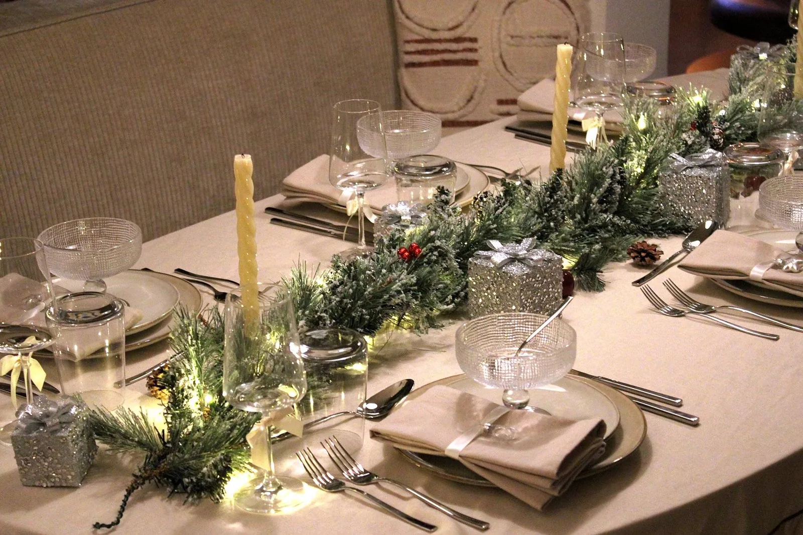
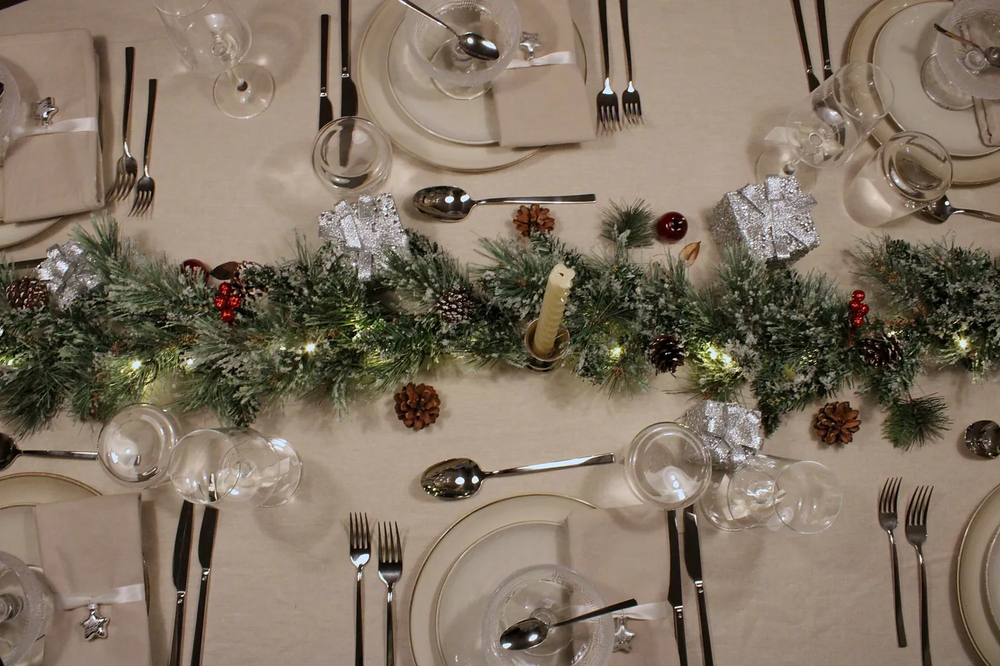
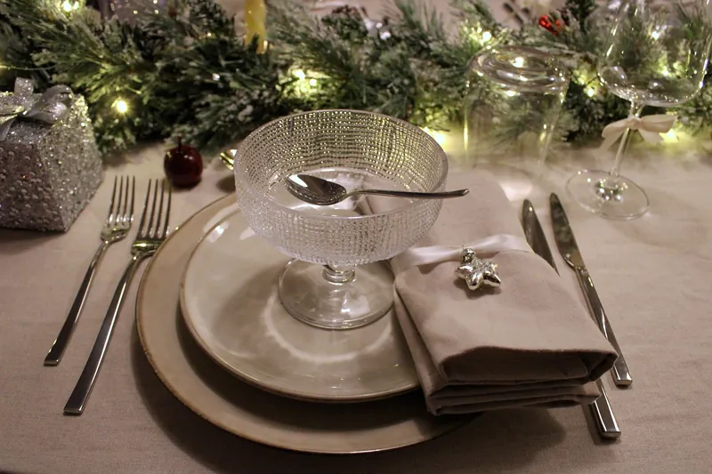
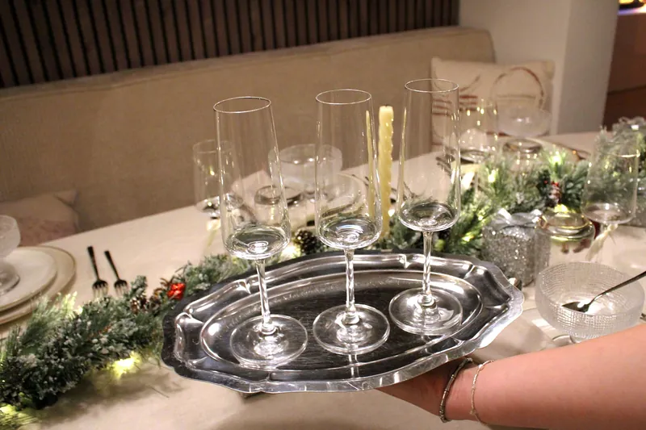
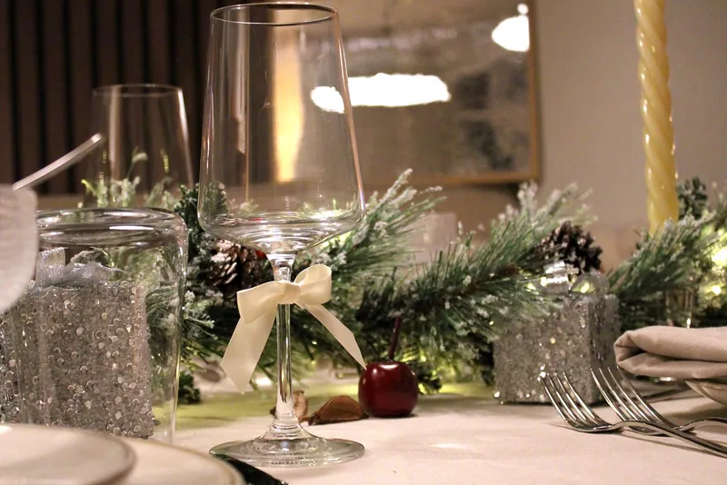
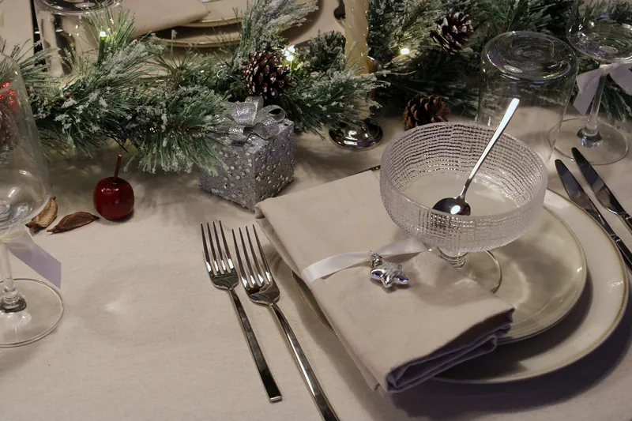
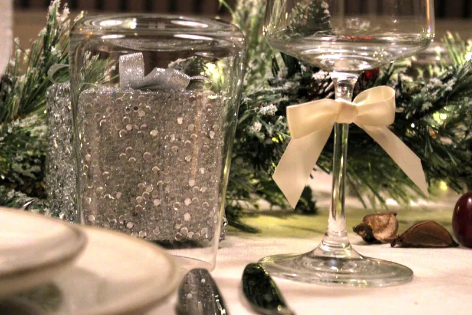
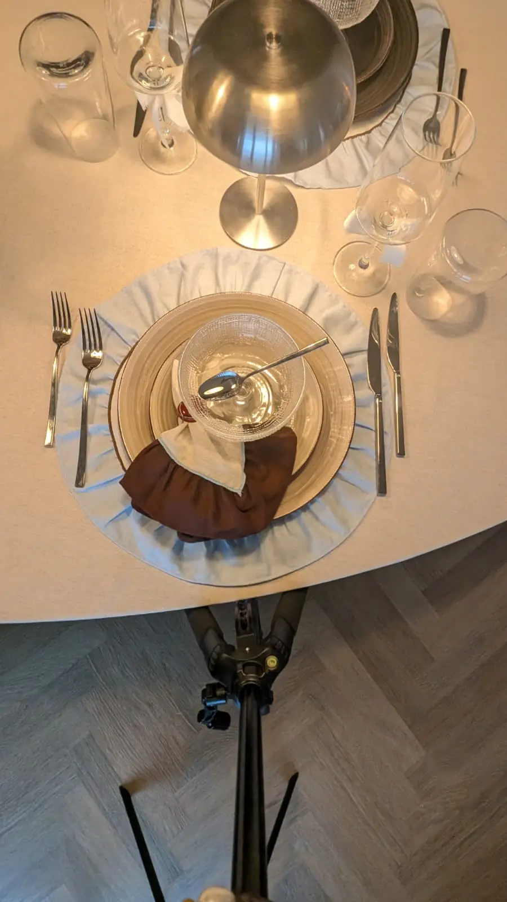
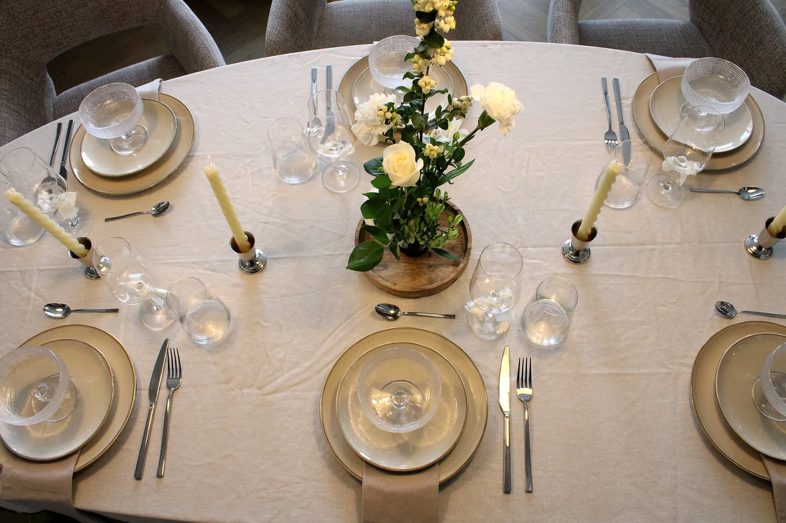

Gelegenheid · December
Tafelstyling voor kerst en de feestdagen
Kerst en oud & nieuw vier je thuis, met de mensen die je het liefst om je heen hebt. Met een compleet gedekte tafel wordt de woonkamer de plek waar iedereen de hele avond blijft zitten.
Je huurt servies, glaswerk, linnen en decoratie in één stijl voor tot 30 personen, voor €16,75 of €17,75 per persoon. Jij regelt het eten en het gezelschap, wij zorgen dat de tafel klopt tot aan het servet. Met onze kerstcollectie Winter Glow ligt de kerstaankleding er al bij.
Eén gedekte tafel voor de feestdagen
Met kerst schuift er vaak meer familie aan dan je borden hebt. Dan wordt het lenen bij de buren, bijkopen, of een tafel met drie soorten glazen, terwijl er juist met kerst uren werk in het eten zit.
Met één complete setting staat alles in dezelfde stijl: diner- en voorgerechtborden, dessertcoupes, bestek, water- en wijnglazen, katoenen servetten en tafelkleden. De huurperiode is drie dagen, dus je dekt dezelfde tafel op meerdere avonden. Na de feestdagen staat er geen extra servies in je kast.
Op oudejaarsavond draait alles om de toost om twaalf uur. Champagneglazen huur je als extra, voor €0,75 per stuk, net als kandelaars en tafellampen voor zacht licht tot na middernacht. Ook voor een nieuwjaarsdiner of -borrel in januari kun je gewoon reserveren.
Populair rond de feestdagen: kaarslicht over de hele lengte van de tafel, zijdebloemen die de hele kerst mooi blijven, en handgemaakte naamkaarten zodat iedereen een vaste plek heeft. Alle extra's en prijzen staan op de pagina Extra's.
Winter Glow: zo ziet je kersttafel eruit
Een lichtgevende dennenslinger met cadeautjes en dennenappels over het midden van de tafel, servetringen met een zilveren ster en strikjes om de wijnglazen: het zit allemaal in het pakket, voor €17,75 per persoon. Champagneglazen huur je los bij. Bekijk Winter Glow






Drie collecties, elk een eigen sfeer
Alle drie bevatten een complete basissetting. Winter Glow brengt de kerstaankleding al mee; bij Mocha Sky horen placemats.
Winter Glow
Onze kerstcollectie, met lichtgevende dennenslinger, servetringen en strikjes. Te boeken van november t/m januari.
€17,75 per persoonIncl. btw
Ontdek Winter Glow
Mocha Sky
Warm, avondlijk en kaarslichtachtig. De klassieke keuze voor een kerstdiner of oudejaarsavond die doorloopt tot laat.
€17,75 per persoonIncl. btw
Ontdek Mocha Sky
Moss & Mist
Groen en natuurlijk. Mooi met eigen dennengroen op tafel, of voor een kerstbrunch bij daglicht.
€16,75 per persoonIncl. btw
Ontdek Moss & MistOver kerst en de feestdagen
Hoe ver van tevoren moet ik reserveren voor kerst of oud en nieuw?
Zo vroeg mogelijk. De feestdagen zijn de drukste periode van het jaar en er is één set per collectie, dus een datum is vergeven zodra die geboekt is. Je krijgt binnen 2 dagen een voorlopige bevestiging. Je reservering is definitief zodra je de definitieve bevestiging per e-mail hebt ontvangen en de aanbetaling van 25% binnen is.
Kan ik de set van kerst tot en met oud en nieuw houden?
De standaard huurperiode is 3 dagen. Elke extra dag kost €35 per reservering, ongeacht het aantal personen. Wil je de set langer dan 7 dagen houden, zoals van kerstavond tot en met nieuwjaarsdag, dan is dat op aanvraag. Je kunt ook twee losse reserveringen maken: één voor kerst en één voor oud en nieuw.
Kunnen jullie de feesttafel bij ons thuis dekken?
Ja. Tafelstyling op locatie kost vanaf €59 plus €0,25 per kilometer, inclusief bezorgen en ophalen. Alleen bezorgen en ophalen kost €25 plus €0,25 per kilometer. Voor de kilometers geldt de enkele reis vanaf Wageningen, keer vier: heen en terug bij het bezorgen en bij het ophalen. Zelf ophalen en terugbrengen in Wageningen is gratis.
Moet ik alles afwassen voordat ik het terugbreng?
Afspoelen is genoeg: etensresten en vloeistoffen eruit, terug in de kratten. Linnen hoeft niet gewassen, alleen droog.
Klaar om je feesttafel te dekken?
Kies je collectie, vul je datum en aantal personen in, en je ziet direct een prijsindicatie. Rond de feestdagen geldt: wie eerst reserveert, heeft de set.